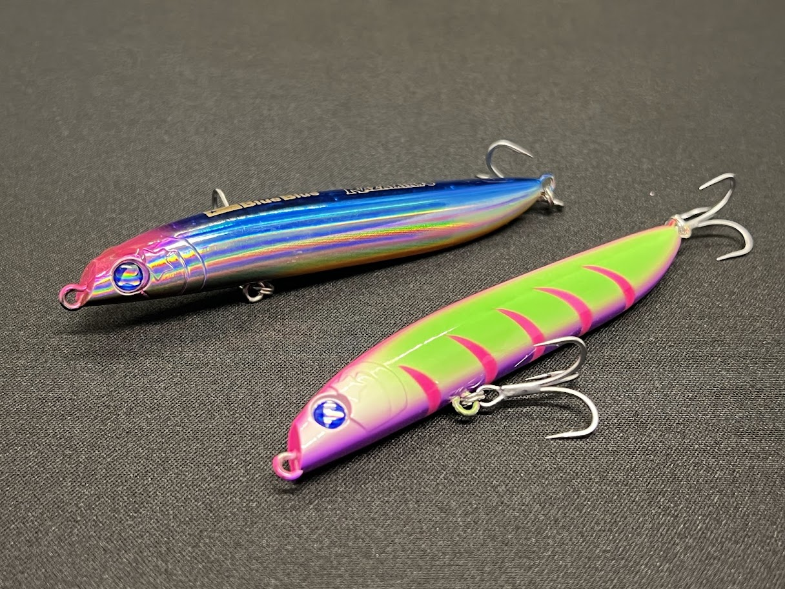
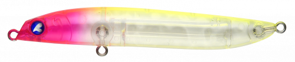
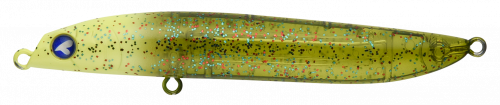
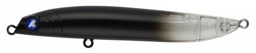
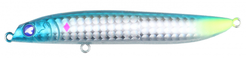

RAZAMIN(ラザミン)90
RAZAMIN(ラザミン)90はBlueBlueのフローティングミノーです。
平行姿勢で見切られにくい。アクションはあえて動かないI字系微波動。

スペック
- メーカー
- BlueBlue
- 長さ
- 90 mm
- 重さ
- 8 g
- フック
- #8×2
- リング
- #2
- レンジ
- 0－10㎝
- タイプ
- ミノー
- 沈下タイプ
- フローティング
- アクション
- I字系微波動
- ターゲット
- シーバス
- 価格
- 1958円(税込)
- 発売日
- 2018-03-25 00:00:00
ラザミン90の特徴
アクションを捨て、バイトを獲る。究極のI字系「気絶」アクション。
-
I字系」の超微波動アクション
ラザミンはフローティングミノーの中で「最も動かない」と言われるほど微細なアクションが最大の特徴です。
何を投げても見切られてしまうようなスレた状況でも魚をバイトに持ち込むことができます。 -
空力設計により軽量ながら優れた飛距離
自重は8gと非常に軽量ですが、重心移動を採用し、飛行機の後部デザインをヒントにした空力設計がボディに施されています。
-
水面直下10cmのレンジと水平姿勢
攻略できるレンジは水面から水面下10cm。
このレンジを水平に近い姿勢をキープできるため、マイクロベイトパターンにおいて、魚に違和感を与えず自然に誘うことが可能です。
ラザミン90の使い方・得意な状況
基本はウェイトを戻してからゆっくり巻くこと。
ラインを「張らず緩まず」の状態でキープすると、水平姿勢でゆらゆらと漂い、最も効果的な微細アクションを発生させます。
ロッドを立ててリトリーブすると引き波アクションになり、水面に引き波を立てながら広範囲にアピールすることが可能です。
得意なパターンは、繊細なベイトパターンがオススメ。バチパターンが王道で、ハクなどのマイクロベイト、サヨリを捕食している状況にも最適。
得意なフィールドは、波や風が少ない鏡張りのような水面や止水域、流れの緩やかな小〜中規模河川、干潟などが得意なフィールドです。
ワンポイント
流れに乗せながら、流れの上流側にトゥイッチを入れると反応がよく出ます。
トゥイッチ後に2秒ほどステイを入れることで、フッキング率が格段に上がります。
人気カラー

ピンクチャートクリアブルーブルー人気カラー。クリアカラーはマイクロベイトパターンと相性GOOD！

根こそぎバチバチパターンで無双したい人はこれ。場所問わず活躍。

シースルーブラックシルエットが一番効くカラー。常夜灯周りでは最強。

ハイブリッジ人気プロ高橋優介の開発カラー。
画像出典:BlueBlue公式HP
ラザミン90に似ているルアー
- ここに手動で追記してください。